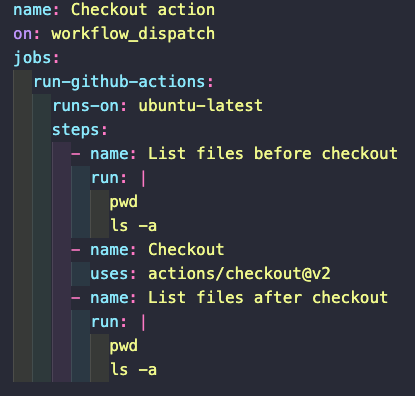

When we run a CLI command in our local machine, the command is run on the current directory. When we use workflows, GitHub will set up a directory in which to run them. This directory is
/home/runner/work/repo_name/repo_name
But, by default, that directory will not contain the files in our directory. The repository is not cloned by default.
We can use an action to clone the repository into the working directory. This special action was created by GitHub and is called checkout. This action will authenticate with our repository, and checkout to the commit that triggered the run.
